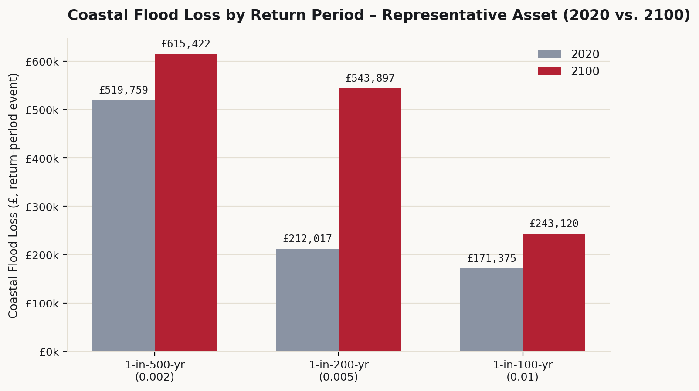
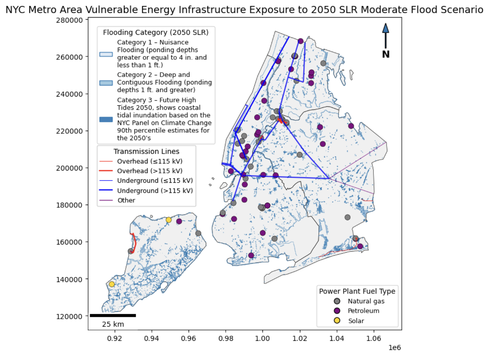
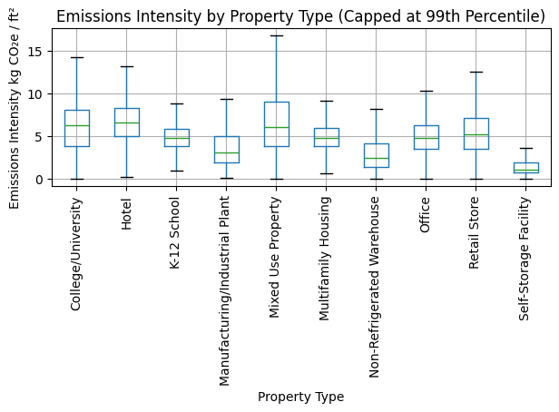
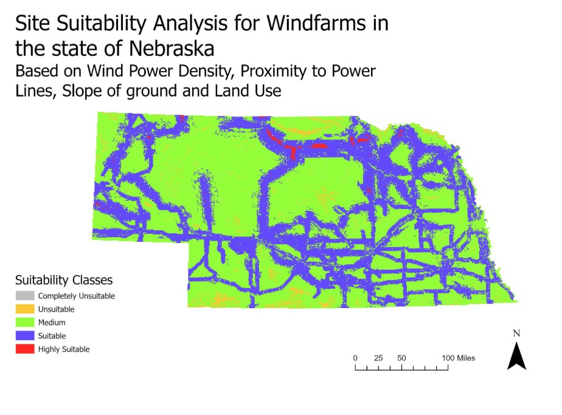

Portfolio prepared for WSP — Infrastructure Resilience
Shivi Anand
Quantitative Climate Risk & Infrastructure Resilience
GIS and climate risk analysis for infrastructure decision-making — modeling natural hazard exposure,
vulnerability, and probable loss across energy, building, and land-use assets in the US, UK, and abroad.
Five projects spanning physical climate risk modeling, flood exposure, emissions compliance analytics,
renewable energy siting, and remote sensing.
Asset-level Physical Climate Risk · Probabilistic Loss Modeling
Physical Climate Risk Assessment — UK Residential Portfolio
Climate Risk Analyst · Technical Exercise, Climate X

Add screenshot: images/lincolnshire-risk.png
(e.g. loss-exceedance curve or AAL trajectory chart)
'">
Impact
Assessed physical climate risk exposure for a ten-asset UK residential portfolio under a high-emissions
(SSP5-8.5) scenario, evaluating flood and windstorm hazard out to 2100 and translating platform risk
outputs into asset-level, investment-relevant metrics.
Approach
Used Python to query physical climate hazard scores via the Climate X API across four hazard types —
river flood, surface water flood, coastal flood, and windstorm — and three return periods (1-in-100,
1-in-200, and 1-in-500 years). Coastal flood emerged as the dominant, most rapidly escalating hazard
across the portfolio. Calculated Average Annual Loss (AAL) — the probability-weighted expected annual
loss, directly comparable to insurance or rental costs — using trapezoidal approximation of the
resulting loss-exceedance curves. For one representative asset, modeled coastal flood AAL rose from
roughly £2,000 per year in 2020 to over £3,700 per year by 2100, an ~80% increase, illustrating how the
methodology captures escalating exposure over time. Delivered asset-level risk flags and investment
recommendations in a client-facing technical report.
Key Tools & Techniques
Python
Climate X API
AAL Modeling
SSP5-8.5 Scenario Analysis
Loss-Exceedance Curves
Climate Risk · Flood Exposure · Infrastructure Resilience
NYC Flood Risk & Energy Infrastructure Exposure — 2050 Climate Scenario Analysis
GIS Analyst / Project Lead · USC Capstone · December 2025

Add screenshot: images/nyc-flood-risk.png
'">
Impact
New York City's energy grid faces growing exposure to coastal flooding as sea levels rise. This project
quantified asset-level infrastructure vulnerability by overlaying 2050 FEMA flood inundation and
sea-level-rise scenarios with transmission line and power plant datasets, producing decision-relevant
insight for urban resilience planning. The output gives utilities and city planners a prioritized
sequence for hardening or relocating the highest-exposure substations and transmission assets first,
within constrained capital budgets.
Approach
Used ArcGIS Pro and GeoPandas (Python) to overlay three flooding categories — nuisance, deep/contiguous,
and future high tides — against transmission lines and power plants across all five boroughs. Applied
NYC Panel on Climate Change 90th percentile projections to assess exposure under a moderate 2050 SLR
scenario.
Key Tools & Techniques
ArcGIS Pro
Python (GeoPandas, Matplotlib)
FEMA Flood Data
NYC Climate Change Projections
ModelBuilder
Building Performance · Emissions Analytics · Regulatory Compliance
NYC Building Emissions Analysis in the Context of Local Law 97
Data Analyst · Enterprise Data Analytics Project, USC · November 2025

Add screenshot: images/nyc-ll97.png
(e.g. emissions intensity distribution or property-type comparison chart)
'">
Impact
Buildings account for the largest share of New York City's greenhouse gas emissions, making them the
central focus of the city's climate mitigation strategy. Local Law 97 introduces emissions caps for
large buildings starting in 2024, tightening through 2030. This project built a repeatable analytics
pipeline to identify high-emitting, inefficient buildings that may require targeted intervention ahead
of enforcement. The ranked output functions as a retrofit-prioritization tool a portfolio or facilities
manager could use to direct limited capital toward the buildings facing the largest compliance exposure
first.
Approach
Ingested NYC building energy and emissions data via the NYC Open Data API, simulating an enterprise
regulatory-data workflow. Reduced over 300 raw fields to a focused, decision-ready data mart of
identifiers, building characteristics, and core emissions metrics. Calculated emissions intensity (GHG
per square foot) as a size-normalized benchmark, then applied a minimum floor-area threshold to isolate
operationally meaningful outliers rather than let small buildings skew the ranking. Analyzed distribution
and property-type patterns — mixed-use, hotel, and office properties showed the highest and most variable
emissions intensity — and designed the pipeline to extend toward automated compliance screening against
LL97 thresholds.
Key Tools & Techniques
Python (pandas, matplotlib, seaborn)
NYC Open Data API
Data Mart Design
Statistical Distribution & Correlation Analysis
LL84/LL97 Regulatory Framework
Renewable Energy · Multi-Criteria Analysis · Project Lead
Wind Energy Siting & Feasibility Analysis in Nebraska
GIS Analyst / Project Lead · DOE Collegiate Wind Competition, 2nd Place Nationally · Marshall Energy Business Club · Dec 2025 – Present
View Live Tool — WindSite AI →

Add screenshot: images/nebraska-wind.png
'">
Impact
Nebraska has significant untapped wind energy potential, but utility-scale development requires
navigating competing land use constraints across 93 counties. Beyond the GIS suitability model, this
project conducted a full market evaluation of Nebraska as a development target — assessing regulatory
environment, transmission infrastructure, interconnection queue dynamics, policy landscape, and
permitting timelines — producing an investment recommendation framework used in national competition
judging and giving developers a defensible basis for where to option land first.
Approach
Built WindSite AI, a full-stack geospatial ML platform automating wind farm suitability analysis
end-to-end. Ingested five data layers — Global Wind Atlas, HIFLD transmission lines, ESA Sentinel land
use/land cover, USGS elevation, and the US Wind Turbine Database — and trained a Random Forest classifier
to weight variable importance across all 93 counties, rendering scored suitability maps via Mapbox GL JS.
Integrated the Claude API to auto-generate structured site acquisition briefs directly from model
outputs, translating suitability scores into county-level briefs covering priority sites, project risk
factors, and recommended next steps for development teams.
Key Tools & Techniques
Python (scikit-learn, ArcPy)
Random Forest Classification
Mapbox GL JS
Claude API
ArcGIS Pro / ModelBuilder
Global Wind Atlas, HIFLD, Sentinel, USGS, USWTDB
Food Security · Remote Sensing · Conflict Analysis
Ukraine's Abandoned Farmland Quantified Using Satellite Imagery
Undergraduate Researcher · Conference Presenter · USC Spatial Sciences Institute · Aug 2023 – May 2024

Impact
Following the 2022 Russian invasion, Ukraine — one of the world's largest grain exporters — faced
catastrophic disruption to agricultural production. This research quantified the extent of farmland
abandonment using satellite imagery, contributing evidence-based findings to the global conversation on
food security. Findings were presented at the 2024 American Association of Geographers Annual Conference
and the LA Geospatial Summit.
Approach
Analyzed multispectral PlanetScope SuperDove imagery using NDVI indices to detect and classify changes in
agricultural land use before and after conflict. A six-year NDVI time series (2018–2023) was constructed
to distinguish conflict-driven abandonment from seasonal variation across a 93 square mile study area in
Kherson, Ukraine.
Key Tools & Techniques
ArcGIS Pro
PlanetScope Imagery
NDVI Analysis
Raster Change Detection
Time Series Analysis